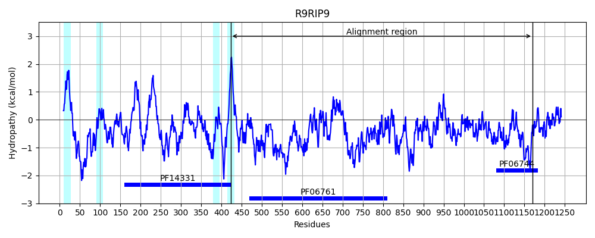
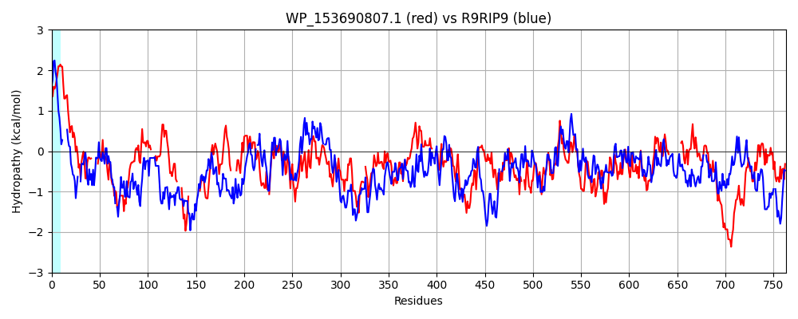

Hit Accession: R9RIP9
Hit TCID: 3.A.23.4.1
Hit Description: gnl|BL_ORD_ID|19837 gnl|TC-DB|R9RIP9|3.A.23.4.1 Uncharacterized protein OS=Acinetobacter baumannii GN=tssM PE=4 SV=1
Mach Len: 763
e:0.000000
Query TMS Count : 3
Hit TMS Count: 4
TMS-Overlap Score: 0.500000
Predicted Substrates:CHEBI:8526;protein polypeptide chain, CHEBI:4291;deoxyribonucleic acid
BLAST Alignment:
Score: 487 , Bit scores: 192 bits, E-value: 1.1e-49, Alignment length: 763, Percentage identity: 24
Query: 351 LAICACVLAVWVAGMMTSFFANRALIQETAIQATRARDIRLP------LSEQLAALHTLQSQLERLQYRIRHGAPWYQRFGLERNAHLLSAAFPGYAQAANRLV----RDVAAAYLQQQLNAFVALPPNSP----QRTATGEQ-----------RYKQLKALLMMSRPEKSDAAFFSTTLMAEHLRY-----AAVPEGTRQSVLPSLLTFWMANLPEHPQWKIAP-QPQLTGAVRKILLRQIGVRNAENTLYQNVLKQVSRNYADITLADMTGDTLADPLFSTEQTVPGIFTRQAWEGQVKEAIEQVVTARREEIDWVLSDRRQD-ASADISPEVLRARLTTRYFTDFAGSWQAFLNSIRWKKEDSLSGVLDQLTLMADARQSPLIALTDTVAWQA-----ATGRESAGLSDSLVKSAKALFNGKENTSHVVRKDETPAGPMDKTFAPLLRLIGDTTGGRGDTQLSLQTWLTRVTRVRLKLQQVINAPD--PQEMTQQLAQTVFQGKTVDLTDTRDYGRLIAASLGEEWSGFGQSLFVSPVEQAWRQVLTPAADSLNRQWQRAIVNLWEQDFAGRYPFKDTAN-DASLPLLAQYLRDDGRINQFIATNLTGMLKREGRYWVADTMNTQGLAINPAFLRALNR------------LRDVADTAFASGDAGVHFELMAKPARDVMKTHLVIDGQQLEYFNQKERWQRFSWPHEQWQPGASLSWTSTQNMERILADFRGSWSFIRLLEQAQVTQLDSSSFKLQWQA 1061
LA + +L VWV S+ N+ LI E +QA + ++L LS QL AL LQ +L++L P FGL + L Y + ++V + A YLQ+ N L N ++TA +Q Y LKA LMMS P+ DA+ S + + +P +L++ M L Q+ I QL R++LL I A + +Y + + + + +T++ + G+ + + + +PG+FT++AW V++AIE+ + DWVL+ R+ D + SPE +R +LT Y ++ W+ FL+ I + K + + + + ++ + + SP+ L + VA + E A + K +++ + G + + + +L+ +G + L ++T + VR K ++ NA + P MT + QT+ + +V + +A E Q L VSP+ QA+ ++TP D +N+ W + + A +YPF +A+ A+ + Q L ++G I++F+ +L + R G + T G+++NP F+ R L A A A+ + F + P ++ + IDGQ++ Y N ++W F WP++ PGA ++ Q + D G + RL++ AQ + + F++ W++
Sbjct: 423 LAGVSIILGVWV----WSYRNNQQLISE--VQADLNKVVQLEKGSSQQLSTQLEALLILQRRLQQLD-EFDENRPLKFSFGLYQGNELREKLKAEYLKGVKQIVLTPTQQNIAQYLQRVKNNEATLKANHTNVEIKQTAQTQQYLEPSDTNPQDAYNALKAYLMMSNPQYMDASHLSDQVTRFWRSWLDANKGQMPRADMIQEAEQILSYAMT-LANDKQFPILDADSQLVDQTRQVLLSVIRGMPARDRVYNEIKMRAAVRFPALTVSQIVGEANKNVVLGS-YALPGVFTQKAWNDYVEKAIEEAADKPTDSKDWVLNSRQSDDLTFSGSPEQIRKQLTALYKQEYIAEWRKFLSGIHYAKANQFAQQVKNIDVLGEPQNSPIRTLIERVAIETNWDNPVVQAELAAPQKGFIAWFKRKVLNRDDKQLANQAVANAQGAISQEYQMFYQLVRKRDDQQGKSLLD--EYMTNLALVRSKFNELKNAGEVGPSAMTL-VKQTLNEQTSVFNQTQKIVDEKMAVGFSEIDQQLLQKLVVSPLTQAFESLITPTQDEINKLWVMQAYQPFTTNLAKKYPFNSSASLQATSSEIGQILGENGSISRFVKESLDPFVIRRGYTLTSKTWKDLGISLNPQFVMNFQRYVAPTNGMATGELNSQAPAAPATNQSNFQFYPIQNP--QLLSYTVDIDGQRMTYENGVQQWVNFIWPNQGSIPGARITAVDLQGQTHTIFDEPGEYGINRLIDSAQRKE-QNGGFEMLWRS 1170 | Protein Hydropathy Plots: |
|---|
 |  |
Pairwise Alignment-Hydropathy Plot:
|
|---|
|  |